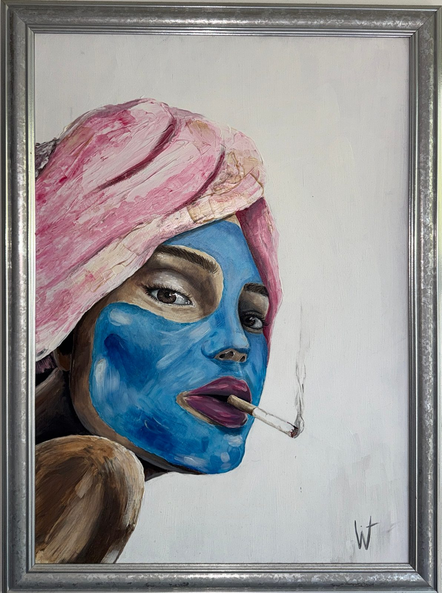

Madame
januari • 2024
De nonchalante dame op de vroege ochtend.
Hoe ik het maakte
Het schilderij is wederom gemaakt op een canvas die ik bij een tweedehandswinkel heb gekocht. Met snelle vegen heb ik het opgezet wat resulteert in een levendige en expressieve schilderij.
Wat voor emotie erbij is
De uitstraling van dame die na een nacht vol avonturen wakker is geworden en haar ochtend begint. Waarin twee kanten van haar persoonlijkheid zichtbaar zijn namelijk de zorgzaamheid met het masker maar ook de nonchalantie het roken.